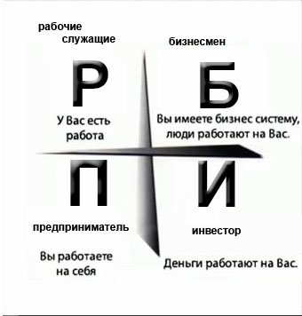
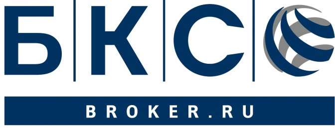
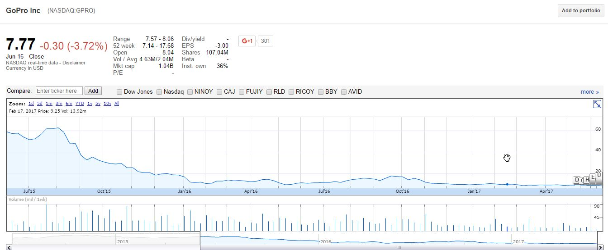

Дождливый вечер четверга, я сижу на диване и пишу свою новую задумку для разработки телеграм-ботов clabo. День отличился
защитой магистерской работы, а впереди много свободного времени, что значит - самое время написать пост. Пост посвящен
управлению личными финансами и увеличению их количества.
Для чего человеку деньги? Ежедневно большинство людей тратит бодрую половину дня на их добычу, некоторые продолжают и
спустя 8 рабочих часов. Кто-то приходит домой, по пути заскочив в магазин, затем, на выходных тратит еще немножко и вот,
месяц спустя, на кануне дня зарплаты, эти люди обнаруживают, что всё в порядке и денег хватило точно на месяц.
При этом ежемесячные необременительные платы за кредит кажутся нормальными.
Очень много таких примеров и, на мой взгляд, вина этому российское общедоступное финансовое образование (которого нет).
10⁄90
Возможно кто-то слышал про правило 10/90, оно применяется во множестве сфер, но здесь и сейчас оно как нельзя кстати.
В управлении личными финансами это правило гласит:
"Независимо от зарплаты, любой человек может отложить 10% своего дохода, не навредив себе"
Однако, к сожалению, его используют не так часто, хотя это довольно просто, получив з/п, отложить десятую часть. Просто
посчитайте 10% от средней з/п в 30 тыс. это 3 тыс. рублей, а теперь умножте их на 12 месяцев и вот у вас скопленные 36
тыс в год, можно сказать, 13я зарплата. Соответственно, там где зарплаты больше и накопления больше. Удивительно, но 10%
это не лимит и при желании эта цифра вполне растет до 50%, однако для этого нужна хорошая мотивация.
Мотивация
Что я хочу? Какая цель накоплений? Это самые важные вопросы, которые вы можете себе задать на первом этапе. Новая машина?
Квартира побольше? Или путешествие по миру? Про что вы можете сказать "я хочу!"? Выберите одну цель и запишите её на лист
бумаги. Лучше всего распечатать цветное изображение того, что вы действительно хотите. Поверьте, если вы будете видеть
вашу цель хотябы пару раз в день, то накопления будут не трудом, а счастьем. Каждый раз, заходя в Starbucks или куда ещё
похиповее, перед вашими глазами будет всплывать изображение цели, а желание выкинуть на кофе пару сотен исчезнет.
Мы разобрались с тем, что любой человек способен откладывать какую-то сумму, но что если у него нет целей типа квартир и
машин? Что же, я бы советовал добавить к этому списку финансовую независимость. Обсудим это ниже.
Финансовая независимость
Что такое эта мифическая финансовая независимость и почему так мало людей её достигают?
Я не являюсь экспертом в области финансов, но у меня есть своё определение. Для меня финансовая независимость это
возможность, не прикладывая значительных усилий, иметь всё необходимое и даже больше. Для меня финансово независимый
человек ходит на работу не от потребности в деньгах, а от исключительно от любви к своему делу. Реально ли это? Я
убежден, что это может сделать каждый, поэтому, говоря о себе - я иду к этой цели. В книге Роберта Кийосаки "Квадрант
денежного потока" автор предлагает очень простую концепцию. Разделим квадрат на 4 части и обозначим каждую своей буквой.
Р - рабочий, П - предприниматель, Б - бизнесмен и И - инвестор. Пример ниже.

Так или иначе вы относитесь как минимум к одному из квадратов и мне нравится концепция того, что для уверенного стояния
"на двух ногах" необходимо занять второй квадрат и тогда вам не страшны никакие колебания рынка. Сейчас я отношусь к
квадрату Р, т.е. я ежедневно хожу на работу и это мой основной доход, к счастью, моя работа мне действительно нравится,
но сейчас не об этом. Для того чтобы двигаться к финансовой независимости стоит освоить еще один квадрат.
Выбирая между частями квадранта я остановился на квадрате И - инвестор.
И - Инвестор
Довольно громкое слово Инвестор скрывает в себе то, что человек, даже с минимальными вложениями куда-либо с целью
получения прибыли, тоже является инвестором. Вспомним про откладываемые 10% в месяц, а почему бы не взять эти деньги
и не попытаться умножить? Способы бывают разные, их можно ранжировать по уровню риска или по порогу вхождения,
но в общем их много: вклад в банк, покупка акций/облигаций и прочих производных интструментов на бирже, покупка
валюты в надежде на рост, покупка или организация бизнеса, покупка различных пифов и ETF'ов и так далее.
Тот человек, который вам скажет "не рискуй! зачем тебе это?" будет прав, однако эта правда субъективна.
Одно из самых важных правил: не инвестируйте деньги, которые вам нужны или пригодятся в ближайшее время.
В тот момент, когда вы продадите условные акции по низкой цене, потому что срочно нужны деньги, вы пожалеете,
что связались с инвестированием. На данном этапе моей жизни мой опыт инвестирования сводится к бирже акций и облигаций.
Об этом я расскажу ниже.
Биржа
Что такое биржа и как она работает можно узнать на бесплатных курсах вот здесь, я сделал
именно так. Знания рассеивают многие сомнения и предубеждения. Если кратко, то
биржа - это место где есть товары, есть продавцы, а есть покупатели. Одним словом - рынок. Акции и облигации - это
товары, а вы можете выступать как продавцом, так и покупателем. Когда вы принимаете решение инвестировать в какую-то
компанию то первая задача - это открыть брокерский счет, вторая - закинуть деньги, третья - купить акции.
Как я говорил ранее мой опыт сводится к торговле акциями, в основном IT компаний.
Почему IT? Я понимаю этот сектор и я в нем постоянно кручусь, для меня не составляет труда
отслеживать новости, т.к. они постоянно на слуху. В тот момент, когда я решил этим заняться для
меня простым и понятным решением была система Tinkoff Инвестиции. Спустя время я понял, что
пришла пора оглянуться вокруг, по этому для начала я посмотрел на брокера через которого работает сервис Тинькова.
Им оказался BCS (БКС).

Сразу скажу, что это никакая не реклама и в ходе работы с БКС я открыл для себя несколько неприятных моментов о которых напишу
ниже. Я выбирал между разными брокерами и когда вы приступите к выбору и примете решение, то обратитесь на сайт биржи,
проверьте в списке участников торгов своего брокера.
Когда я выбирал себе брокера, то конечно верить рейтингам после просмотра фильма
"Игра на понижение" совем не хотелось и
я обратился к гуглу в поисках чужих мнений о компаниях. Оказалось, что у многих есть большое кличество недовольных
клиентов и многие из них были недовольны услугами "финансовых экспертов". Я очень люблю такие
моменты, когда люди фактически неявно отдают свои деньги другому человеку, полностью доверяя его
мнению, а потом жалуются что что-то пошло не так. Если вы хотите отдать свои деньги, чтобы их
умножили - идите в банк, это будет оптимально. Однако, если вы остались читать дальше, а не заняли
очередь по талончику на открытие вклада, то хочу вас предупредить, что за любое решение принятое
на бирже несете ответственность только вы и если вам дают советы, то поступать или нет в
соответствии с ними - это ваше решение.

На днях я открыл один финансовый журнал, его прошлогодний (2016 год)
выпуск, и это было почти как посмотреть стендап Эдди Мёрфи. В этом журнале были прогнозы по
некоторым компаниям (например, GoPro) и глядя на текущее (2017 год) состояние дел нельзя не улыбнуться, во многих
случаях "финансовые эксперты" не просто не угадали, а указали на полностью обратное направление,
таким образом те, кто, прочитав этот журнал в далеком 2016 году, поверили экспертам в потенциальный рост 100% для gopro
- очень сильно проиграли. Но вернемся к брокерскому счету, я изучал какие возможности предоставляют BCS и открыл для
себя индивидуальный инвестиционный счет (ИИС). ИИС - это особый вид брокерского счета, он позволяет вернуть 13% от
отправленых на биржу денег (до 400 тыс. руб) в качестве налогового вычета (всё получится, если вы налоговый резидент РФ
и имеете хорошую белую зп),
сообтветственно, максимально 52 тыс. руб., либо избавить владельца от налогов спустя 3 года владения счетом. При всех
этих бонусах процент, который забирает себе брокер выше чем на обычном брокерском счету, и судя по тарифной сетке
(1.29. Тарифный план «БКС – Директ»)
аналогичен Тиньков Инвестициям (TI). На сегодняшний день я использую обе системы. И у той и у другой есть свои плюсы и
минусы. Давайте сравним:
| Характеристика | БКС ИИС | Tinkoff Инвестиции |
|---|---|---|
| Порог вхождения от 0 до 5 | 5 | 1 |
| Слежение за налогами | Брокер - налоговый агент | Налоги вычитаются из суммы при выводе денег |
| Перемещение денег между площадками |
Занимает время | Моментально. Пользователь не знает об этом |
| Минимальный объем валюты при покупке |
$1000 | $1 |
| Поддержка | Круглосуточная | Круглосуточная |
| Комиссия | 0,3% от суммы сделки, но не менее 99 рублей | 0,3% от суммы сделки, но не менее 99 рублей |
| Общее преимущество | 13% от инвестиций, но до 400 тыс. (требуется белая з/п) | Любая операция делается очень просто |
| Бесплатное мобильное приложение | Есть | Есть |
| Пополнение счета | Банковским переводом около 1 рабочего дня | Перевод с карты Тинькофф Банка около 1 рабочего дня |
Ни одна из этих систем не подходит для внутридневного трейдинга, однако, если вы хотите быть инвестором, то это не проблема.
При взаимодействии с БКС есть некоторые особенности, вот с чем я столкнулся:
Итоги
В следующих частях я расскажу про интересных эмитентов на западном рынке, акции которых доступны на бирже Санкт-Петербурга, а также поделюсь информационными ресурсами, которые приходят на помощь мне при наблюдении за рынком IT компаний, затем мы обсудим другие виды инвестиций.
редакция от 17.06.2017
comments powered by Disqus